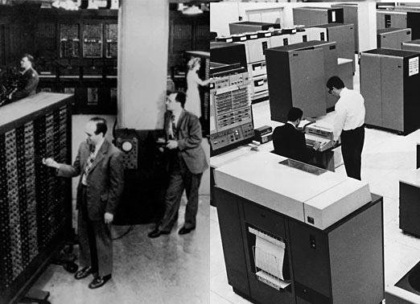

Os mainframes surgiram na década de 1950 como a solução para o crescente demanda por poder computacional em grandes instituições. Esses computadores eram caracterizados por sua alta capacidade de processamento, grande memória e a habilidade de executar múltiplas tarefas simultaneamente. Com a introdução de sistemas operacionais avançados, os mainframes se tornaram mais versáteis, permitindo a execução de diversos programas ao mesmo tempo. Uma das características marcantes dos mainframes é sua confiabilidade e segurança, fatores cruciais para organizações que gerenciam grandes volumes de dados. Além disso, eles são projetados para suportar operações contínuas, muitas vezes funcionando 24 horas por dia.
Exemplos de Mainframes Notáveis |
Um dos mainframes mais icônicos é o IBM System/360, lançado em 1964. Este sistema revolucionou a indústria de computadores ao introduzir uma arquitetura compatível que permitia a interoperabilidade entre diferentes modelos. O System/360 se tornou um padrão para a computação empresarial, suportando uma ampla gama de aplicações, desde processamento de dados até controle de sistemas industriais. Outros exemplos notáveis incluem o IBM Z, que continua a evoluir, e o Unisys ClearPath, ambos amplamente utilizados em ambientes corporativos. |
 |
Os mainframes são amplamente utilizados em grandes organizações, especialmente nas indústrias de finanças, seguros e governo. Suas aplicações incluem: